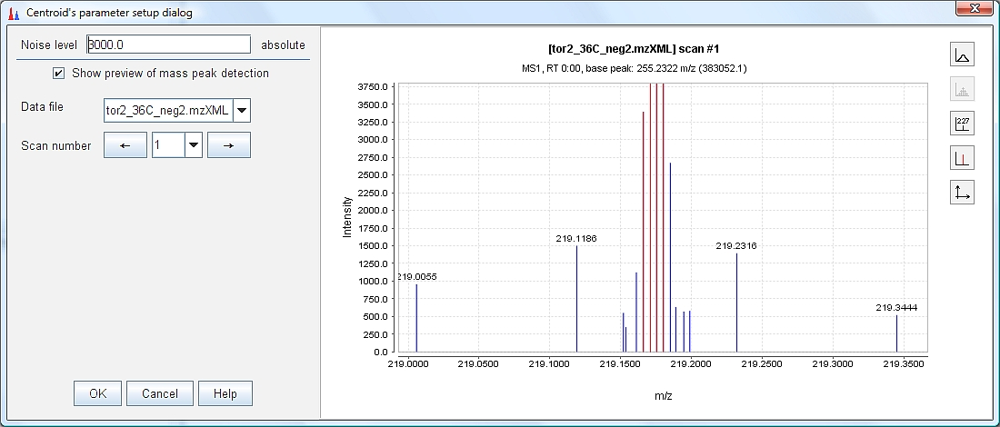

The Chromatogram builder is the main module for peak detection in MZmine 2. Its purpose is to create a list of masses which form continuous chromatograms in raw data. Later, these chromatograms may be deconvoluted into individual peaks by the Deconvolution module.
The Chromatogram builder module works in three steps: Mass detection, Filtering and Chromatogram construction. The motivation to divide the process into several steps is to allow the users to optimize each step according to the characteristics of their data.
In the Mass detection step, individual ions are detected in each mass spectrum. In other words, each mass spectrum is centroided. Several algorithms are provided for this step. The choice of the optimal algorithm depends on the raw data characteristics (mass resolution, mass precision, peak shape).
In case the raw data is already centroided, only one algorithm (Centroid mass detector) can be used. Other algorithms work only with continuous type data.
This mass detector is suitable for already centroided data. It simply assumes that each signal above given noise level is a detected ion.

This mass detector is suitable for high-resolution MS data, such as provided by FTMS instruments. It first searches for all local maxima within the spectrum. These form candidate ions. After that, exact mass is determined for each candidate ion using the FWHM paradigm (Full Width at Half Maximum). First, the method locates the nearest data points to the peak center at half of the maximum intenstiy (P1, P2, P3, P4). With these four points it is possible to calculate two points (cP1, cP2) that define the width of the peak and the exact mass (the center of the width is considered as exact mass).

This mass detector represents a very simple method, which detects all local maxima within the spectrum, except those signals below the given noise level. The practical usability of this method on real MS data is limited, but it is useful to demonstrate and understand the functionality of mass detection using the preview plot.

This mass detector is suitable for continuous data, which has too much noise for the Exact mass detector to be used, but which shows a consistent width of m/z peaks. The algorithm works in a recursive way. Initially, it looks at the whole range of data points. If the m/z width of this range is not within given limits, a minimum data point is found and used to split the range in two parts. The same algorithm is then applied recursively on each part. Recursion continues until all m/z ranges which fit into the given width limits are found. Final m/z values are determined as local maxima of the identified m/z ranges.

The Wavelet transform mass detector is particularly suitable for low-resolution and noisy data. The method uses the Mexican Hat wavelet model of the continuous wavelet transform CWT) algorithm. The search of mass spectrum peaks is executed in three steps. First, the data point intesity is converted into wavelet domain. Next, all local maxima of the calculated wavelet are found. Finally, m/z peaks (ions) are declared in those points, where the wavelet has a local maximum. The m/z peak is formed with the selected data point (mass and intensity) using the wavelet and all surrounding data points. The final m/z value of the ion is calculated as an average of m/z values of surrounding data points weighted by their intensity.
In mathematics and numerical analysis, the Mexican hat wavelet is the normalized second derivative of a Gaussian function.

The parameter t is the intensity of each data point in the curve, and sigma corresponds to the standard deviation.


To simplify the process of wavelet calculation, the original function is transformed into two parts, where Wc is the wavelet coefficient and y is the intensity of the wavelet at certain point. In the following formula, "t" is the Wavelet window size(%) parameter.


The limits, where the Mexican Hat wavelet is evaluated, are from -5 until 5 (ESL, ESR) and the incremental step used in this range is the result of divide the width of ESL to ESR range by 60,000. The number of coefficients used to calculated the wavelet intensity depends on the Scale level parameter.


Filtering is an optional operation which may reduce the amount of false chromatograms by removing those m/z signals which can be recognized as noise. The filtering is done on the detected m/z peak lists, raw data is not considered in this step.
Raw data obtained from FTMS (Fourier Transform Mass Spectrometer) instruments often contains false signals around high-intensity m/z peaks, called "shoulder peaks". These signals are residues of the Fourier Transform function and their intensity is usually below 5% of the main (true) m/z peak. The FTMS shoulder peaks filter attempts to remove these false signals. Detected m/z peaks are processed in the order of decreasing intensity. A peak model (shape) is built around each m/z peak using given function and resolution, and those m/z peaks which fall below the model are considered to be shoulder peaks and are removed. The method offers three peak models.

The Gaussian peak model is a characteristic symmetric "bell shape curve" that quickly
falls off towards plus/minus infinity, described by the following formula.

The parameter "a" is the height of the curve's peak, "b" is the position of the center of the peak, and "c" controls the width of the "bell".

The Lorentzian function (Cauchy-Lorentz distribution) is used for this model.

The Lorentzian peak model is described by the following formula:

Where "x0" is the location parameter, specifying the location of the peak of the distribution,
and "y" is the scale parameter which specifies the width of the peak.

This model uses the same mathematical formula as the Lorentzian peak model, but the lower part of the model (below of 5% of intensity) is extended. The width of the peak below 5% intensity is calculated from another Lorentzian peak with 5% of the resolution of the main peak.

When mass detection and filtering is finished, m/z data points from each scan must be connected together to form chromatograms.
This method maintains a pool of chromatograms spanning between scans. For each processed spectrum, the ion list generated by the mass detector (and filtered, if selected) is processed in the order of decreasing intensity and each m/z peak is connected to the appropriate chromatogram according to the m/z tolerance parameter. When no matching chromatogram is found, a new chromatogram is with the m/z value and added to the pool. When a chromatogram is finished (no m/z peak is found to be connected to), its length (time span) and intensity (heihgt) are checked according to user-specified minimal values. Those chromatograms which fit the required parameters are added to the final peak list.